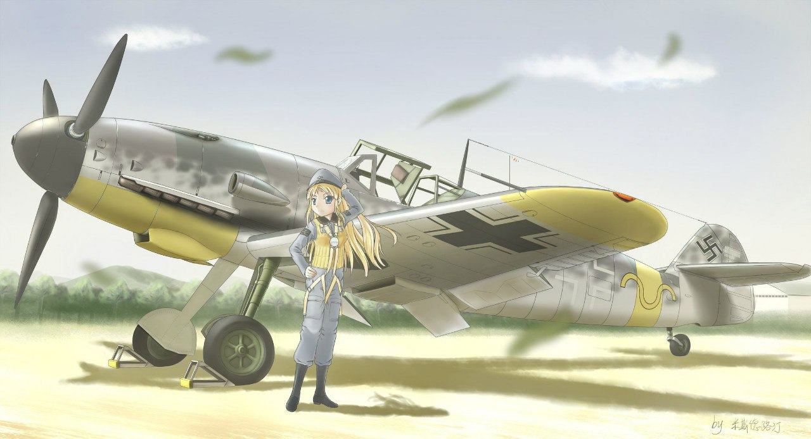

Еще в январе 1939 г. конструкторы фирмы "Мессершмитг AG" приступили к кардинальному пересмотру аэродинамики истребителя Bf 109. Довольно угловатый капот мотора, оставшийся в наследство от ранних модификаций машины, стабилизатор с подкосами, недостаточно совершенные тоннели радиаторов охлаждающей жидкости, неубирающаяся стойка хвостового колеса - все это требовало переработки в первую очередь. Кроме того, не дремали и разработчики моторов. Фирма "Даймлер-Бенц" заканчивала доводку более совершенной версии двигателя DB 601Е взлетной мощностью 1350 л.с. и номинальной мощностью 1270 л.с. на высоте 2000 м, что позволяло надеяться на определенную прибавку к скорости и скороподъемности самолета. Новому варианту самолета присвоили букву F, вследствие чего в Люфтваффе он стал известен как "Фридрих".
При отработке отдельных изменений использовались четыре серийных планера, переделанные из Bf 109Е-1, которые получили номера прототипов - V22, V23, V24 и V25, соответственно. В частности, на машине Bf 109V22 (зав. No. 1800, D-IRRQ) с двигателем DB 601Аа, впервые поднявшейся в небо 26 января 1939 г., опробовали новую, аэродинамически более совершенную капотировку мотора с увеличенным коком, улучшенные жидкостные радиаторы в подкрыльевых тоннелях, свободнонесущее оперение и полуубираемую хвостовую стойку шасси. Ширину колеи основных стоек шасси несколько увеличили, дополнительно отклонив стойки наружу на 6╟. Тоннель маслорадиатора глубже утопили в нижний капот. Размах крыла уменьшили на 0,6 м, при этом и его площадь соответственно сократилась. На этой опытной машине законцовки крыла оставались трапециевидными как на "Эмиле". Киль, прежде симметричный, на "Фридрихах" получил плоско-выпуклый профиль, что в известной мере обеспечило компенсацию разворачивающего момента двигателя. Площадь руля направления сократилась с 0,75 до 0,7 м2 в связи с уменьшением его хорды в верхней части. Если на "Эмилях" капоты силовой установки были съемными, то у "Фридрихов" верхние части капотов могли быть откинуты на петлях и подняты вверх, а нижняя часть капота вместе с маслорадиатором также опускалась на рояльной петле.
На второй опытный самолет Bf 109V23 (зав. No. 1801, D-ISHN) установили предсерийный двигатель DB-601E; эту машину использовали преимущественно для отладки силовой установки. Диаметр винта уменьшили на 0,14 м в связи с тем, что новый двигатель бьи форсирован по частоте вращения вала, зато лопасти винта стали немного шире.
На третьей опытной машине Bf 109V25 (зав. No. 1930, D-IVKC) объединили все нововведения, предпринятые на V22 и V23, и, кроме того, впервые смонтировали подковообразный маслобак позади кока увеличенных размеров и винт от истребителя Me 209. Первые опытные машины сохранили прямоугольный в сечении воздухозаборник нагнетателя двигателя, но вскоре аэродинамики фирмы установили неблагоприятное влияние пограничного слоя воздушного потока на процессы в приводном центробежном нагнетателе (ПЦН). Вследствие этого форму воздухозаборника нагнетателя радикально пересмотрели. На прототипе Bf 109V24 (зав. No. 5604, VK+AB) с мотором DB-601E его впервые выполнили круглым в сечении, несколько сместив от стенки фюзеляжа; так удалось устранить влияние пограничного слоя воздуха. Первый полет на этой машине летчик-испытатель фирмы Г. Беувайс совершил 10 июля 1940 г.
Крыло Bf 109 мало менялось, начиная с первого опытного самолета и включая модификацию Е. Что касается "Фридриха", то профиль и силовая конструкция крыла остались практически прежними, чего нельзя сказать о форме крыла в плане. В частности, на прототипе Bf 109V25 установили легкосъемные за-концовки крыла полуэллиптической формы. В принципе их появление стало своеобразным признанием конструкторами своей ошибки, связанной с уменьшением размаха крыла у предыдущих прототипов "Фридриха". Следует отметить, что площадь элеронов и предкрылков у истребителей этой модификации несколько уменьшилась по сравнению с "Эмилями", но управляемость относительно продольной оси при этом осталась удовлетворительной. Зато увеличилась площадь закрылков, которые к тому же стали щелевыми, а значит, более эффективными.
По мнению разработчиков, больше всего портили аэродинамику крыла коробчатые жидкостные радиаторы, смонтированные под крылом. Для прототипов "Фридриха" спроектировали новые устройства (фронтальная площадь радиатора увеличилась на 15%), уменьшенные по высоте, но более широкие по размаху. Тоннель жидкостного радиатора также перепроектировали с учетом новых знаний в области аэродинамики: возмущенный пограничный слой отвели через специальную щель, сделали автоматически регулируемыми переднюю губу тоннеля и верхнюю панель крыла, при этом нижнюю подвижную створку тоннеля кинематически связали с закрылками. Заметим, что на "Эмиле" положение створок радиаторов и отклонение закрылков никак не были взаимосвязаны, поэтому, например, при взлете заторможенный в радиаторе поток попадал на отклоненный закрылок, а это приводило к снижению эффективности функционирования как закрылка, так и радиатора. Новая система регулирования температуры охлаждающей жидкости (50% этиленгликоля, 47% воды, 3% антикоррозийной присадки), разработанная для "Фридриха", оказалась весьма совершенной; она сохранилась на всех последующих моделях "сто девятого", вот только от "слива" пограничного слоя пришлось отказаться: из-за роста тепловой мощности моторов радиаторы вновь увеличили в размерах, и места для щели не осталось...
Двенадцатицилиндровый двигатель перевернутой схемы DB 601Е представлял собой наиболее совершенный вариант семейства (естественно, из числа серийных моделей). Он отличался от предшественника (двигателя DB 601N) в основном конструкцией головок блоков цилиндров. Измененная форма камеры сгорания позволила использовать топливо В4 с более низким октановым числом (87). Мощность мотора удалось увеличить путем форсирования двигателя по частоте вращения вала (взлетная мощность - 1350 л.с. при частоте вращения вала 2700 об/мин, номинальная мощность - на высоте 5100 м - 1200 л.с. при 2500 об/мин). В отличие от DB 601N, двигатель не имел автомата форсажа, ограничивавшего продолжительность работы на этом режиме одной минутой. Следует подчеркнуть, что по результатам испытаний в ЦИАМ, проведенным в 1943 г., на боевом (форсажном) режиме мотор DB 601Еа развивал мощность 1450 л.с. на высоте 2000 м и 1350 л.с. на высоте 5100 м, то есть значительно превосходил отечественный двигатель М-105ПФ2.
Рабочий объем остался прежним (33,9 л). Диаметр цилиндра составлял 150 мм, ход поршня - 160 мм, - степень сжатия - 7,0 для цилиндров левого блока и 7,2 для цилиндров правого блока. Цилиндры двигателя четырехклапанные (по два впускных и два выпускных), каждый из них имел две свечи фирмы "Бош". Передаточное число редуктора винта составляло 0,593. Направление вращения вала редуктора двигателя - по часовой стрелке. Запуск двигателя мог осуществляться электростартером (что было для тех времен необычным решением) или ручным инерционным стартером, раскручиваемым двумя механиками.
Любопытной особенностью всех моторов "шестисотой" серии фирмы "Даймлер Бенц" являлось наличие турбомуфты, обеспечивающей механическую связь между валом двигателя и крыльчаткой приводного центробежного нагнетателя (ПЦН). Давление наддува поддерживалось неизменным от уровня земли до высоты порядка 5,1 км (без учета скоростного напора в полете). Первичный вал турбомуфты с помощью косозубой передачи соединялся с валом двигателя, передаточное число составляло 10,39:1. На первичный вал насаживалась небольшая турбинка, приводившая в движение масло в полости турбомуфты. Пока масла в полости было относительно немного, вторичный (выходной) вал с другой турбинкой вследствие скольжения вращался с меньшей частотой, нежели первичный. Регулируя подачу масла в полость турбомуфты, можно было плавно управлять частотой вращения выходного вала, на который насаживалась крыльчатка нагнетателя. В контур управления подачей масла был включен измеритель давления наддува (обычная анероидная коробка). Если давление наддува падало - масла подавалось больше, если увеличивалось сверх необходимого - масло откачивалось из полости. Инерционность устройства положительно влияла на работу двигателя: пилот мог сбросить газ, при этом частота вращения первичного вала турбомуфты относительно быстро падала, но выходной вал еще некоторое время сохранял прежние обороты и помогал регулирующей системе справляться с "возмущением". При резкой даче газа турбомуфта "растягивала" процесс разгона вторичного вала и также демпфировала слишком резкий скачок давления.
Одноступенчатая центробежная крыльчатка нагнетателя имела 12 лопастей. Давление наддува до границы высотности поддерживалось на уровне 1,42 кгс/см2 на взлетном режиме и режиме максимальной мощности (форсаж), 1,30 кгс/см2 на боевом и номинальном режимах и 1,15 кгс/см2 на эксплуатационном режиме работы мотора (режиме наибольшей дальности полета).
Другой интересной особенностью двигателя являлась система непосредственного впрыска топлива в цилиндры, построенная на основе бензонасоса высокого давления фирмы "Бош" типа PZ 12 HP 110/19 с индукционным датчиком, корректором состава горючего и поплавковым насосом, а также впрыскиваюших форсунок типа "Л'Оранж" 9-2137. Эта система обеспечивала нормальную работу двигателя при любом пространственном положении самолета, при отрицательных и положительных перегрузках.
Винт "Фридриха" оснастили электрическим регулятором постоянства частоты вращения, причем его конструкция позволяла пилоту отключить автоматику и управлять шагом винта вручную, как это делали пилоты "Эмилей".
К числу остроумных мелочей следует отнести особую систему очистки свечей в полете. Потянув специальную тягу, пилот мог сместить момент вспышки топлива в цилиндре таким образом, чтобы температура в камере сгорания кратковременно повысилась. Это способствовало выгоранию масляного нагара на электродах свечи зажигания, и свеча снова "оживала". На более поздних типах двигателей конструкторы "Даймлер-Бенц" обошлись без этой системы, поскольку выяснилось, что выжигания нагара на свечах можно добиться просто путем кратковременного вывода двигателя на максимальную мощность.
Впрочем, на первых порах из-за недоведенности силовой установки немецким авиастроителям пришлось пойти по уже накатанному пути, установив на самолет новой модификации прежний вариант двигателя. Предсерийные машины Bf 109F-0 получили моторы DB 601 N. Такой двигатель существенно уступал DB 601Е по мощности и высотности (взлетный режим - 1215 л.с., одноминутный боевой режим - 1285 л.с., номинальная мощность 1120 л.с на высоте 1500 м и 1085 л.с. на высоте 4000 м), однако для второй половины 1940 г. его данные все же были весьма неплохими.
Отзывы о летных характеристиках новых самолетов, полученные в ходе войсковых испытаний, оказались самыми благоприятными. Маневренность улучшилась по сравнению с Bf 109E-4/N, оснащенным аналогичным двигателем. Полный вираж на высоте 1000 м истребитель Bf 109F-0 (зав. No. 5605, VK+AC) выполнял за 18 с, а радиус виража не превышал 300 м. Скороподъемность у земли увеличилась с 17,4до 19 м/с. Для набора высоты 5000 м требовалось всего 5,2 мин. В целом новый самолет оценивался летчиками очень высоко, однако они высказали определенное разочарование в связи со снижением огневой мощи машины.
Дело в том, что с самого начала "Фридрихи" предполагали вооружить 20-миллимет-ровой мотор-пушкой MG 151 фирмы "Маузер", отличавшейся более высоким темпом стрельбы по сравнению с прежними эрликоновскими пушками MG/FF (темп стрельбы 450 выстр./мин, начальная скорость снаряда 550 м/с). Однако разработчики опять слегка не уложились в сроки, поэтому в развале блоков цилиндров пришлось временно устанавливать именно MG/FF. Это орудие с магазинной системой заряжания, длинным ходом ствола и рядом других особенностей мало подходило для применения в составе силовой установки, что и подтвердил негативный трехлетний опыт подобных попыток. Фюзеляжные пулеметы MG 17 (темп стрельбы 1200 выстр./мин, начальная скорость пули 762 м/с) с боекомплектом по 500 патронов остались на прежних местах, над мотором, а крыльевые пушки на "Фридрихах" не устанавливались. Таким образом, число стволов у первых Bf 109F-0 по сравнению с Bf 109Е-4 уменьшилось на единицу, а масса секундного залпа сократилась почти вдвое.

После изготовления 25 предсерийных Bf 109F-0 (зав. No. 5601 - 5625, часть из них использовалась в качестве прототипов) первый серийный Bf 109F-1 сошел со сборочной линии в ноябре 1940 г. Внешне он почти не отличался от предсерийных экземпляров, но воздухозаборник нагнетателя стал круглым в сечении (по образцу Bf 109V25), в то время как у Bf 109F-0 он был коробчатым, подобно "Эмилям". В рамках войсковой доработки на самолетах Bf 109F-1 усиливалась хвостовая часть фюзеляжа путем приклепывания четырех металлических накладок поверх обшивки в районе килевою шпангоута. На попавших в Африку немногочисленных Bf 109F-1 также в рамках войсковой доработки устанавливали противопыльные фильтры, после чего машины получали обозначение Bf l09F-l/trop. Небольшой серией были выпущены истребители-бомбардировщики Bf 109F-1/B с подфюзеляжным балочным держателем ЕТС 250.
В сентябре 1940 г. специалисты фирмы "Маузер" сумели наладить серийный выпуск пушки MG 151с 15-мм стволом (темп стрельбы 900 выстр./мин, начальная скорость снаряда 870 м/с). Отметим, что это орудие и в нашей стране расценивалось бы как крупнокалиберный пулемет, а в Германии вполне официально, причем в обоих вариантах (15-мм и 20-мм), считалось пулеметом ("машиненгевером"). По немецкой классификации времен Второй мировой войны термин "пушка" применялся к орудиям калибра 30 мм и выше. В соответствии с отечественными критериями пулеметами считались ствольные системы, стреляющие пулями, т.е. боеприпасами, не содержащими в своем составе взрывчатого вещества (но существовали ведь и разрывные пули...). В противоположность им пушки стреляют снарядами с разрывными зарядами (но бывают ведь и бронебойные болванки, не содержащие таковых). Еще более тонким моментом можно считать отсутствие медного направляющего пояска у пули (следовательно - пулемет), и наличие его у снаряда (следовательно - пушка).
Итак, пушку с 15-мм стволом и боекомплектом из 200 патронов, обозначавшуюся в документах как MG 151/15, стали устанавливать на "Фридрихи" второй серии, которые в других отношениях практически не отличались от предшественников. На ранних Bf 109F-2 также имелись внешние усиливающие накладки в хвостовой части, приклепанные непосредственно в заводских условиях. Самолет получил новую кислородную систему, работающую с баллонами повышенного давления. Бензобак емкостью 400 л изготовили из 10-мм резины, уложив его в фанерный короб. Резина была многослойной, внутренний слой не вулканизировался и при пробитии пулей набухал в присутствии бензина, локализуя течь. Короб бензобака выполнялся из фанеры также со смыслом: алюминиевые листы, пробитые пулей, формировали заусенцы, препятствовавшие затягиванию отверстия, а фанерные заусенцев не создавали. Некоторое время истребители модификации Bf 109F-2 строились параллельно с Bf 109F-1. Оба типа машины по-прежнему оснащались моторами DB 601N, для которых требовался 96-октановый бензин марки СЗ. Максимальная скорость Bf 109F-2 у земли достигала 502 км/ч (по данным англичан - даже 517 км/ч), а на расчетной высоте 6000 м - около 600 км/ч.
Известны три субмодификации Bf 109F-2, причем две первые выпустили небольшой серией, а третья работа носила опытный характер:
истребитель-бомбардировщик F-2/B с подфюзеляжным бомбодержателем ЕТС 250, позволявшим подвешивать бомбу калибра 250 кг;
истребитель в тропическом исполнении F-2/Trop с противопыльным фильтром и воздухозаборником нагнетателя, отличавшимся увеличенным сечением;
высотный истребитель F-2/Z с системой впрыска закиси азота, винтом с уширенными лопастями, воздухозаборником нагнетателя по типу F-2/Trop и маслорадиатором повышенной производительности и увеличенных размеров.
По-настоящему наладить производство "Фридрихов" немецкая авиапромышленность смогла лишь в марте-апреле 1941 г., а ранее, начиная с декабря 1940 г., она выпускала 100-120 одномоторных истребителей в месяц. С учетом весеннего "производственного бума" общее число "мессершмитгов" модификации F, изготовленных до 22 июня 1941 г., можно оценить приблизительно в 1800-1850 единиц. Эти машины по комплексу летно-технических характеристик превосходили любой истребитель союзников по антигитлеровской коалиции.
Первые "Фридрихи" попали в руки советских и английских специалистов почти одновременно, в июле 1941 г. Как уже говорилось, командир I11/JG26 майор Р. Пингель неудачно атаковал английский бомбардировщик, его Bf 109F-2 получил попадание в радиатор, и германский летчик вынужден был посадить "сто девятый" на "живот" на британской земле, слегка помяв винт и капот мотора. Между прочим, в виде исключения еще на заводе-изготовителе машину по просьбе Пингеля вооружили дефицитной пушкой MG 151/20.
Это была обычная практика - специально для признанных асов предприятия слегка модифицировали истребители, придавая им особые качества. Известно, например, что двигатели двух самолетов Bf 109F-2, принадлежавших А. Галланду, работали на 100-октановом бензине и, по-видимому, выдавали несколько большую мощность, чем серийные (возможно, это были DB 601Е). Кроме того, одна из галландовских машин вместо пары MG 17 несла крупнокалиберные (13-мм) пулеметы MG 131 (ее называли Bf 109F-2/U), а другая, помимо обычного для Bf 109F-2 вооружения, сохранила в крыле пушки MG/FF (по типу Bf 109Е-4).
Первая попытка оценки летных данных немецких истребителей в нашей стране была предпринята вскоре после нападения на нее Германии, в конце июля 1941 г., когда из боев на Западном фронте отозвали 410-й бомбардировочный авиаполк, точнее, то, что от него осталось. Полк сформировали в первые дни войны на базе отдела бомбардировочных самолетов НИИ ВВС КА. С 5 по 22 июля 410-й бап выполнил 235 самолето-вылетов, потеряв 33 Пе-2, в том числе 22 машины от огня вражеских истребителей. Доклады летного состава позволили прийти к неутешительному выводу: "мессершмитгы" обладали заметным преимуществом в скорости над новейшими отечественными бомбардировщиками. Это оказалось неожиданностью, ведь максимальная горизонтальная скорость Bf 109Е, которую определили в ходе испытаний в 1940 г., лишь ненамного превосходила скорость "пешки" - разница не превышала 15-20 км/ч на высотах 4000-5000 м. Фактически же, как отмечал командир полка полковник А.И. Кабанов в своей докладной записке, "немецкие истребители свободно догоняли Пе-2 и успевали произвести три-пять атак вдогонку". В этом и других документах указывалось, что "истребители Bf 109, Bf 110 и Не 113 летают быстрее наших бомбардировщиков, как устаревших, так и вполне современных, например, Як-4 и Пе-2". Советские специалисты вполне справедливо предположили, что немцы установили на "мессершмитты" моторы повышенной мощности, позволившие резко увеличить скорость полета.
В начальный период войны истребители Не 113 упоминались в отчетах советских авиационных частей и соединений почти столь же часто, как и Bf 109. По сложившемуся у советского командования представлению Не 113 являлся модификацией хорошо известного, закупленного Советским Союзом перед войной самолета Не 100 (якобы в серии заменили паровое охлаждение на водяное). Он считался самым быстроходным истребителем Люфтваффе. В действительности никакого Не 113 немцы на советско-германском фронте не использовали, под этим наименованием скрывался Bf 109F. Следует отметить, что внешне "Фридрих" действительно довольно сильно отличался от "Эмиля", особенно формой носовой части фюзеляжа и законцовками крыла эллиптической формы.
Вероятно, первый Bf 109F-2 (зав. No. 12766) в относительной целости был захвачен под Ленинградом, в районе Тосно, 20 июля 1941 г. Надо сказать, что истребители Люфтваффе предпочитали в 1941-1942 гг. вести бои и, особенно, "свободную охоту" над территорией противника, ведь многие советские экипажи здесь притупляли бдительность. На этот раз ответный огонь был точен, "мессершмитт" не смог перетянуть через линию фронта и совершил посадку в тылу советских войск. Его пилот лейтенант Г. Рауб из группы I/JG54 погиб в перестрелке с красноармейцами, а захваченный "мессер" через несколько дней украсил выставку трофеев в Ленинграде.
Насколько известно, "трофейные экспонаты" имелись в 1941 г. в Москве, Киеве и Харькове. Конечно, для бойцов и командиров, особенно из ВВС и ПВО, было полезно детально рассмотреть грозного врага. Но более важным представлялось изучение самолета противника в воздухе, оценка его сильных и слабых сторон, выработка рекомендаций по борьбе с ним. До конца 1941 г. провести такую работу не удалось, хотя во второй половине ноября 1941 г. северо-западнее Москвы нашими войсками были захвачены еще два малоповрежденных "мессершмитта" (Bf 109F-2 зав. No. 12811 и 12913) и один из летчиков из отряда 6/JG52. С машин сняли таблички, позволившие определить, что истребители были построены заводом AGO летом 1941 г. Реальная возможность провести испытания германской новинки была упущена. Помешали, по-видимому, плохие погодные условия и эвакуация НИИ ВВС в Свердловск. Кроме того, немецкие сухопутные войска находились практически у ворот Москвы, и все полеты самолетов в этой зоне строго регламентировались командованием ПВО. Очень часто обстреливались и сбивались собственные самолеты, внешний вид которых, казалось бы, должен быть хорошо известен и летчикам, и зенитчикам. Зато нетрудно представить себе их реакцию при появлении в небе "мессершмитта", пусть даже с красными звездами!
Успешное зимнее контрнаступление советских войск значительно увеличило число трофеев. Только под Москвой в период с 5 по 31 декабря 1941 г. удалось захватить 34 вражеских самолета, большинство из которых были либо неисправными, либо подорванными противником при отходе. В руки советских авиационных специалистов попали и несколько Bf 109F. Впоследствии их передали для изучения в ЦАГИ, авиационные КБ и на ремонтные базы. Значительный вклад в сбор и изучение трофейного имущества противника внесли инженеры ВВА им. Н. Е. Жуковского, которые выполняли специальное задание штаба ВВС Красной Армии на Калининском фронте.